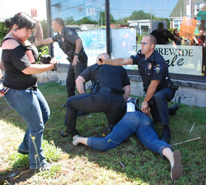

Submitted on Wed, 08/15/2007 - 2:04pm
On Saturday, August 11, 2007, the Providence wobblies organized a march on Jackie's Galaxy, which is a restaurant chain that is being supplied by HWH in New York City, a supplier who is notorious for its slave labor conditions of up to 110 hours per week without basic labor rights (minimum wage and overtime).
Roughly 30-40 wobblies and supporters (including Providence and Boston SDSers) were marching towards Jackie's Galaxy in North Providence when the police began following them en mass. They told the marches to move to the sidewalk, while this was initially ignored, the marchers listened to the police and began slowly moving to the sidewalk.
The police then surrounded the marchers in their squad cars and began getting out. With the police in full force, they began attacking the marchers, one fellow worker, Alex Svoboda, was pinned down by the police during her arrest and suffered a broken and dislocated leg and ruptured blood vessel in the knee. These injuries will require at least two surgeries and extensive rehab and even then may not completely repair the damage. Jason, another wob, was arrested during the police' attack. Ashley, a supporter from Boston, was also severely maced during the attack, suffered chemical burns and required medical treatment.
Submitted on Tue, 08/14/2007 - 2:27pm
 Metro lighting in Berkeley claims to be a "socially and environmentally correct 'green business'," but on Thursday, August 9, 2007, workers feared caustic alkaline may have been releasesd into the air as a result of unsafe disposal.
Metro lighting in Berkeley claims to be a "socially and environmentally correct 'green business'," but on Thursday, August 9, 2007, workers feared caustic alkaline may have been releasesd into the air as a result of unsafe disposal.
IWW members and pro-union workers were locked out that morning after complaining about a potentially serious chemical exposure in their workplace.
The lock-out is yet another union-busting move on the part of Christa and Lawrence Grown, co-owners of Metro Lighting. Workers have been taking collective action to improve their working conditions over the past five months and are demanding the following before they return to work:
Submitted on Tue, 08/14/2007 - 2:19pm
Disclaimer - The opinions of the author do not necessarily match those of the IWW. The image pictured to the right did not appear in the original article, we have added it here to provide a visual perspective. This article is reposted in accordance to Fair Use guidelines.
By Judith Scherr - Berkeley Daily Planet, August 14, 2007
Charges and countercharges are flying between workers locked out by the owners of West Berkeley’s Metro Lighting.
The immediate question for the seven workers of the retail store and manufacturing plant at 2121 San Pablo Ave. was the cleaning of a drum containing allegedly hazardous materials.
Submitted on Tue, 08/14/2007 - 2:08pm
Disclaimer - The opinions of the author do not necessarily match those of the IWW. The union referred to in the article is the IWW. This article is reposted in accordance to Fair Use guidelines.

By George Raine, San Francisco Chronicle Staff Writer, August 4, 2007
The National Labor Relations Board has concluded that the owner of the Real Foods store in San Francisco's Noe Valley neighborhood committed a series of unfair labor practices in 2003 when the store was closed and 31 employees, who had begun discussing the possibility of forming a union, were fired.
Submitted on Tue, 08/14/2007 - 2:02pm
 Starbucks exploits its workers and the farmers who grow the coffee beans it uses. Worldwide it has over 12,000 stores and employs over 100,000 people. In Britain , it has over 500 stores employing 5,000 workers.
Starbucks exploits its workers and the farmers who grow the coffee beans it uses. Worldwide it has over 12,000 stores and employs over 100,000 people. In Britain , it has over 500 stores employing 5,000 workers.
STARBUCKS COFFEE: BAD FOR WORKERS, BAD FOR FARMERS, BAD FOR YOU!
Starbucks exploits its workers and the farmers who grow the coffee beans it uses. Worldwide it has over 12,000 stores and employs over 100,000 people. In Britain , it has over 500 stores employing 5,000 workers.
Starbucks baristas in the UK are barely paid above the minimum wage and are subject to excessive working hours, unpaid overtime; work at a relentless pace, resulting in repetitive strain injuries for many workers. In the US , Starbucks has waged an illegal union-busting campaign resulting in firing of six baristas in New York City .
Coffee growers receive little more than 0.50p for a pound of coffee, which is then sold for £80.
Oxfam launched a campaign against Starbucks in October 2006 after it effectively blocked Ethiopia 's attempts to trademark its coffee beans in the United States .
The tide is turning against Starbucks. In the UK the Industrial Workers of the World (IWW) is organising the Baristas United Union in several organising campaigns at Starbucks; in the US the IWW-Starbucks Workers Union is expanding across the country; in NZ hundreds of casual fast food workers, including Starbucks baristas organised into the UNITE union; workers are getting organised in France and Germany too.
18 August is a national day of action against Starbucks. The IWW, No Sweat and many organisations and supporters are holding protests in cities right around the UK . We are asking the public not to drink at Starbucks today and to show support for the workers and farmers trying to improve their lives and make a living wage.
Contact us to get involved in the campaign:
Industrial Workers of the World – UK
rocsec@iww.org.uk
http://www.iww.org.uk
http://www.baristasunited.org.uk/
PO Box 1158 Newcastle upon Tyne
NE99 4XL
No Sweat
admin@nosweat.org.uk
http://www.nosweat.org.uk
PO Box 36707 London SW9 8YA
http://www.starbucksunion.org/node/1852